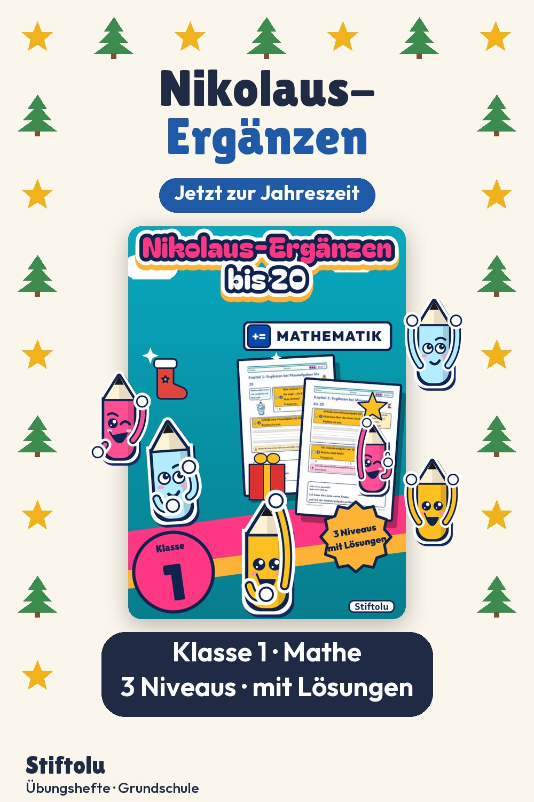
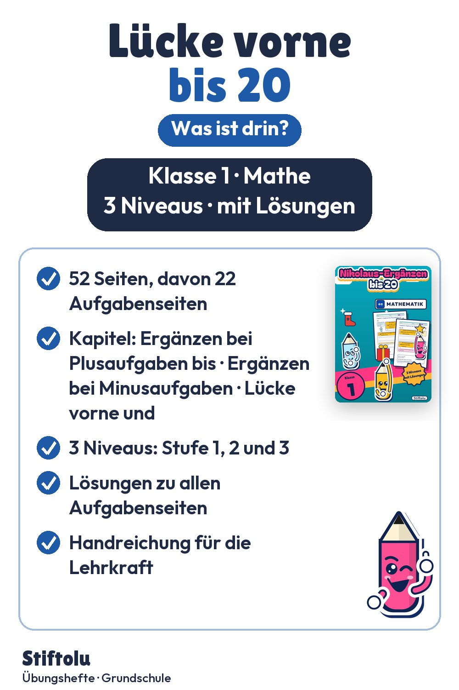

Werbung · Übungsheft von Stiftolu
Ergänzen bis 20 im Nikolaus-Stiefel: Plus, Minus und Lücke vorne, Klasse 1


6 + ☐ = 10 oder ☐ + 10 = 15? Solche Ergänzungsaufgaben bis 20 stehen im Mittelpunkt dieses Nikolaus-Hefts für Klasse 1. Malen, Durchstreichen und eigene Aufgaben erfinden machen sie anschaulich. Handreichung und Lösungen sind dabei; die 52 Seiten sind erhältlich auf eduki im Shop Stiftolu.